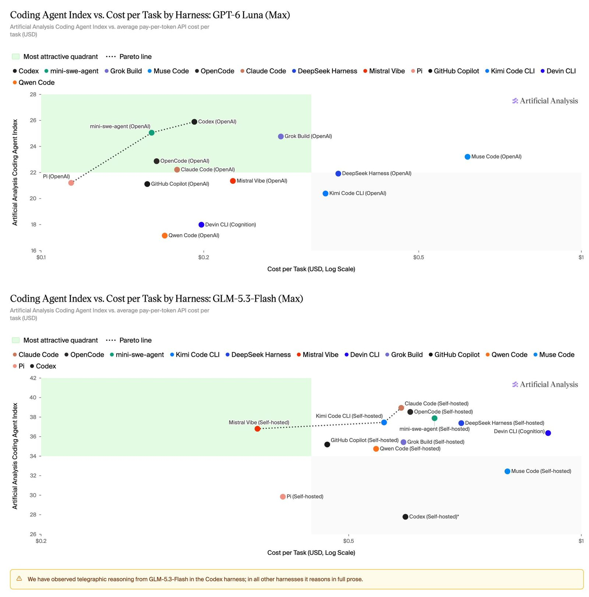

Ouça a edição · 1:53Um papo rápido sobre as notícias de hoje
0:00/1:53
capa · Claude · artifacts viram apps · MCP faz dois anos · @ClaudeDevs
O artifact que o Claude escreve agora vira app de Mac e Windows, com ícone, janela própria e os seus connectors
Dois anúncios da Anthropic salvos na terça apontam para o mesmo lugar: o Claude deixando de ser só uma janela de chat. O botão “Install as app” transforma um artifact em aplicativo de desktop, e o MCP, que completou dois anos, ganhou Skills over MCP, Tasks e Elicitation para servidores que se comportam cada vez mais como agentes.
Posts de 24 de novembro, às 16h47 e às 15h05 (horário de Brasília) · @ClaudeDevs · 6,9 milhões e 1 milhão de impressões
A mecânica é simples. Você pede um artifact ao Claude, testa no próprio chat e escolhe “Install as app” no menu Share ou no título do artifact. O app ganha ícone e janela próprios, aparece numa pasta Claude Apps (dentro de Applications, no Mac, e no menu Iniciar, no Windows), usa a sua conta do Claude, sem API key nem login separado, e se atualiza sozinho quando o artifact é editado. Não é preciso empacotar nem assinar nada, e as chamadas que o app faz ao Claude contam no limite do seu plano.
O que separa isso de um atalho de navegador é o modelo de permissões em três níveis. No padrão, o app só faz o que faria numa aba; com app permissions, pode pedir notificações, atalhos globais, janela sempre por cima e item na barra de menus; com acesso total, roda programas e lê ou apaga arquivos sem perguntar a cada vez. A autorização vale só para a versão atual e é pedida de novo a cada atualização, e o acesso total fica restrito a apps feitos por você ou, nos planos Team e Enterprise, pela sua organização, já que a Anthropic não revisa nada antes da instalação. O recurso está em beta em todos os planos a partir do Claude Desktop 6.28899.0, ligado por padrão no Team (sem acesso total) e desligado no Enterprise até um owner ativar.
No mesmo dia, o MCP fez dois anos, e a Anthropic usou a data para levar ao Claude três extensões do protocolo. Skills over MCP, em public beta, deixa um servidor publicar skills junto com as tools, carregadas só quando necessárias e atualizadas junto com o servidor; Shopify, HubSpot e Atlassian já usam. Tasks e Elicitation chegaram à disponibilidade geral: a primeira permite que o servidor rode um trabalho longo, até um agent loop inteiro, enquanto o Claude segue em frente, e a segunda pausa a chamada para pedir confirmação ao usuário, como a Supabase faz antes de criar um projeto pago. File Uploads vem em seguida.
Juntas, as duas notícias desenham um Claude que trata o servidor MCP como um colega a quem delega trabalho e trata o artifact como software que fica instalado. Para quem constrói ferramenta interna, a pergunta prática muda: o painel que hoje vive numa aba pode virar um app de barra de menus com os mesmos connectors, e o servidor MCP da sua empresa pode carregar dentro dele o manual de como deve ser usado.
A PrismML lançou o Ternary Bonsai 2.5 27B, upgrade do Bonsai 2 construído sobre o Qwen3.8 27B e comprimido em pesos ternários para caber nos mesmos 5,9 GB, nove vezes menos que o modelo em precisão cheia. O salto está no trabalho de agente: 73,9 no tau3-bench e 75,6 no SWE-Bench Verified, contra 69,1 e 60,8 da versão anterior, com menos turnos e menos tokens por tarefa. Sai sob Apache 2.0.
Na mesma noite, o time do Atomic Chat publicou a variante uncensored, uma LoRA de 8,67 MB incorporada direto aos códigos ternários do GGUF, que continua com 5,99 GB. No teste deles, as recusas caíram de 24 em 24 para zero, e o MMLU foi de 80,2% para 81,2% numa amostra de 500 questões, diferença que eles próprios tratam como estatisticamente neutra. Para rodar é preciso o fork do llama.cpp da PrismML, e a LoRA também vem separada para quem prefere aplicá-la em tempo de inferência.
O Inkling 2 Mini, o looped transformer de 26 bilhões de parâmetros da Thinking Machines que foi capa da edição 77, virou campo de prova para engines locais. A Inco AI lançou o Splash 1.7.2 com um drafter DFlash 2 treinado para o modelo: 91,1 tok/s num M5 Pro de 16 núcleos, contra 53,1 do MTPLX e 47,1 do mlx-serve, e mais de 200 tok/s num M5 Max. A instalação é um brew install e um splash serve, o drafter vem junto, e tudo sai sob Apache 2.0.
Do outro lado, o Atomic Engine, preview do time do Atomic Chat construído sobre o llama.cpp, aposta em memória: faz streaming dos experts direto do SSD dentro de um orçamento de RAM que você define. O post fala em 122 tok/s contra 40 do llama.cpp no M5 Max, com até metade da RAM; o README, mais conservador, mostra 105,7 tok/s num M4 Max com 14 GiB de orçamento e 18 tok/s com apenas 4 GiB, com a mesma saída token a token.
o harness pesa no custo, um super adapter no M6, o recuo de Theo, um SDR no Grok Bot, uma stack aberta e mais
benchmarks · harness · @ArtificialAnlys

A Artificial Analysis isolou o harness e mostrou que ele pesa mais no custo do que na nota
O Harness Comparisons, nova visão do Coding Agent Index, fixa o modelo e troca só o harness: o GPT-6 Luna e o GLM-5.3-Flash rodaram, no esforço máximo de raciocínio, em 13 harnesses cada. Não existe campeão universal. O Luna vai melhor no Codex, o harness da própria OpenAI (26 pontos), que fica em último com o GLM; o GLM brilha no Claude Code (39), que é só o sexto com o Luna.
A diferença de nota entre a maioria dos harnesses é pequena, de 20 a 26 com o Luna e de 35 a 39 com o GLM, mas o custo por tarefa vai de US$ 0,11 no Pi a US$ 0,62 no Muse Code, e de US$ 0,38 no Mistral Vibe a US$ 0,91 no Devin CLI. O detalhe curioso: dentro do Codex, o GLM raciocina em fragmentos curtos e gera 52 mil tokens de saída por tarefa, contra 97 mil a 202 mil nos outros, o que ajuda a explicar o pior resultado dele justamente ali.
Com o super adapter do Hugging Face, a pagoda de teste saiu em 10 minutos, e não em 82
O Hugging Face publicou uma receita para treinar com RL, dentro do próprio harness, uma LoRA para o Qwen3.8-27B; as versões para Pi, OpenCode e Hermes Agent foram fundidas num super adapter que eleva a média de pass@1 de 39,5% para 49% e corta de 53% a 73% das tool calls. O Anemll, que roda modelos no Neural Engine da Apple, testou o adapter no Pi com ANE e GPU de um M6 e viu a pagoda da demo ficar pronta em 10 minutos, contra 82 sem ele, e fala em até oito vezes menos tempo em algumas tarefas.
3min47sentre o anúncio de fechar o código do T3 Code e o recuo do próprio Theo
Theo ameaçou fechar o código do T3 Code e voltou atrás em menos de quatro minutos
O post salvo, “Lesson learned. We will close the source of T3 Code tonight”, foi a reação de Theo a um dia de críticas à telemetria do T3 Code, ligada por padrão desde março e que gerava um identificador a partir de hashes dos arquivos de login do Codex e do Claude. Pouco depois, ele mesmo escreveu que não faria isso por ser uma reação exagerada.
Na mesma noite entraram cinco correções, a principal deixando de ler esses arquivos, e Theo publicou os 95.789 eventos da própria telemetria. O repositório segue público e com licença MIT, e a coleta pode ser desligada com T3CODE_TELEMETRY_ENABLED=false ou DO_NOT_TRACK=1.
Fabio Ricotta montou um SDR no Grok Bot que só escreve quando acha um problema comprovado
Dono de agência de marketing, Fabio descreveu num artigo o bot que prospecta por ele: busca empresas e decisores na Apollo, exclui clientes, ex-clientes e quem já foi abordado e investiga primeiro o tráfego orgânico contra os concorrentes, depois se a marca aparece no ChatGPT, no Gemini e no Perplexity e, por fim, os anúncios. Ele para no primeiro problema com evidência, confere cada número em outra fonte e descarta a empresa se não achar nada.
O brief segue para o Claude Code ou o Codex escrever o e-mail, o Fabio aprova e envia pelo próprio Gmail, e o bot acompanha respostas e registra tudo no GitHub. O artigo foi escrito para ser mandado direto ao seu bot como instrução.
17 + 13apps e serviços na stack de Gabriel Buzzi, do terminal ao Pix
Gabriel Buzzi abriu a stack inteira que sustenta o dia a dia e os apps dele
Do lado dos apps estão o T3 Code como ferramenta padrão de IA e desenvolvimento, o Ghostty no terminal, o OrbStack para containers, o Raycast, o Wispr Flow para ditado (com o Hex em teste), o Executor para centralizar os MCPs, o CodexBar para acompanhar o uso das assinaturas de IA e o Remotion com o edits MCP para vídeo.
Nos serviços aparecem Upstash para Redis e filas, Woovi para Pix, Stripe e RevenueCat para pagamentos, Cloudflare Workers e R2 para hospedagem, PlanetScale, Dokploy, PostHog, Infisical e Sentry. Vale como checklist para comparar com a sua, sobretudo nos itens que resolvem gestão de MCP e custo de assinatura.
O raea renderiza na sua GPU o vídeo que o seu agente escreve em React e TypeScript
O raea, de Render Anything Engine, é um app de desktop e uma engine para vídeos, motion graphics, cenas 3D e jogos. Você descreve no chat, o seu agente (Claude, ChatGPT, Kimi ou um modelo local) escreve o código em React e TypeScript, e a engine renderiza localmente, mais rápido que o tempo de reprodução.
Há timeline manual no estilo do CapCut, um modo 3D em que mexer numa peça reescreve o código da cena e uma aba de revisão que devolve comentários ao agente. A versão 0.1.6 roda em macOS com Apple Silicon, Linux e Windows, sob licença FSL-1.1-ALv2.
O Kiri 0.3.0 chega com 53 correções de estabilidade e um builder próprio, o Kiri Forge
O Kiri é um container runtime em Rust que se apresenta como substituto leve do Docker Desktop, do OrbStack, do Colima e do Podman, e fala a Docker Engine API, então docker, Compose e buildx continuam funcionando. No benchmark do README, um container alpine sobe e sai em 2,55 ms pela API, contra 213 ms do Docker Desktop e 380 ms do OrbStack, e o daemon fica em cerca de 15 MB com a VM dormindo.
A próxima versão pula da 0.2.2 direto para a 0.3.0, e o comando kiri import traz imagens, volumes e containers do OrbStack ou do Docker Desktop.
Animação feita com Claude não precisa parecer slop, e o MotionVideo é o atalho para referência
Quando o @niran7 reclamou que vivemos a era do “claude animation slop”, chata e sem graça, o @alaymanguy respondeu com duas palavras, “skill issue”, e um link para o MotionVideo, uma galeria de referências de motion design organizada por tipo de produto e de uso.
O argumento implícito é que o modelo anima o que você descreve, e quem chega com boa referência sai com animação melhor. O post virou um dos mais salvos do dia, com quase 5 mil bookmarks.
13.146a Lei Brasileira de Inclusão, de 2015, que exige site acessível
Sibelius Seraphini lembra que acessibilidade é requisito, e no Brasil está na lei
A Lei Brasileira de Inclusão (13.146/2015) exige site acessível de empresas com sede ou representação no país, e Sibelius lista o básico que resolve boa parte dos problemas: dá para usar tudo só com o teclado, todo input tem label, o contraste é legível, toda imagem tem alt e o foco fica visível.
A pergunta que fecha o post serve de teste imediato para qualquer time de produto: você já usou o seu app sem mouse?
Transforme um artifact do seu dia a dia em app de barra de menus
Atualize o Claude Desktop para a versão 6.28899.0 ou mais nova e peça um artifact pequeno, como um timer Pomodoro que mora na barra de menus ou um painel que puxa dados de um connector que você já usa. Escolha “Install as app” no menu Share, conceda só as app permissions e veja até onde ele chega sem acesso total ao computador.
teste 2 · Bonsai 2.5
Rode o Ternary Bonsai 2.5 27B com uma tarefa de tool use
Baixe o GGUF PTQ1_0 de 5,9 GB da PrismML e carregue no fork do llama.cpp da própria PrismML com llama-cli -m e -ngl 99. Dê a ele a mesma tarefa de várias etapas que você usa para avaliar o seu modelo local atual e compare o número de turnos e a qualidade do resultado final.
teste 3 · harness
Rode a mesma tarefa em dois harnesses e anote o custo
Inspirado no Harness Comparisons, escolha um ajuste pequeno e real do seu repositório e execute com o mesmo modelo em dois harnesses, como Claude Code e Pi ou Codex e OpenCode. Anote tokens, tempo e custo de cada rodada; se a qualidade empatar e a conta não, você achou onde economizar.